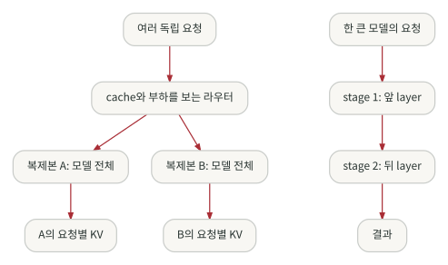

카드를 늘리기 전에 무엇을 나눌지 결정해야 한다. 한 요청의 연산을 나눌지, 모델의 layer를 나눌지, 서로 다른 요청을 나눌지가 먼저다. FuryNo5·fxbX의 현재 커스텀 실행 계획은 한 장치의 fusion 8·Single 계약을 검사한다. 여러 카드를 꽂았다는 이유로 그 계획이 자동 분산되지는 않는다. 공식 Furiosa-LLM의 병렬성, 최신 opt-vLLM의 병렬성, 우리 프로젝트의 구현 상태도 서로 구분한다. fxbX device 계약 · 공식 병렬성
1. 같은 숫자 8이라도 의미가 다르다
| 용어 또는 옵션 | 의미 | 혼동하면 생기는 문제 |
|---|---|---|
| 한 RNGD 카드의 8 PE(Processing Element) | 카드 안의 처리 단위 | 독립 카드 8장으로 잘못 계산 |
set_fusion(8) |
그 실행 규격의 PE 사용 계약 | 모델 복제본 8개를 만든다고 오해 |
Furiosa-LLM tensor_parallel_size |
TP(Tensor Parallelism) group의 PE 수 | 카드 수를 넣어 잘못 컴파일 |
opt-vLLM tensor_parallel_size |
현 plugin에서 engine의 chip 수 선택으로 전달 | 공식 LLM의 PE 단위 설정을 복사 |
| 여러 호스트 | 네트워크로 연결한 별도 OS·메모리 공간 | 한 호스트의 HBM(High Bandwidth Memory)처럼 취급 |
공식 LLM은 TP를 FXB 컴파일 시 결정하고, serve에서 임의로 바꾸지 않는다. 공식 예에서 카드 네 장은 PE 32개이며 TP 8·PP(Pipeline Parallelism) 4·DP(Data Parallelism) 1 또는 TP 8·PP 2·DP 2로 나눈다. 이 조합을 opt-vLLM에 그대로 복사하면 안 된다. opt plugin은 LoadOptions.chips(tensor_parallel_size)로 연결한다. 공식 단위 설명 · opt admission의 chips 연결
2. DP, TP, PP를 실제 데이터 이동으로 이해한다
DP는 모델 복제본에 서로 다른 요청을 보낸다. 복제본 사이에서 한 토큰의 중간 activation을 계속 교환할 필요가 적으므로 서비스 처리량을 키우는 첫 후보가 된다. 대신 각 복제본의 가중치·요청 상태·cache가 필요하다.
TP는 하나의 행렬 계산 등을 여러 처리 단위로 나눈다. 모델과 activation을 나눌 수 있지만 partial sum을 합치는 all-reduce, 잘린 결과를 모으는 all-gather 같은 통신이 연산 사이에 들어간다. 작은 batch에서 계산량이 작으면 이 통신이 상대적으로 커진다.
PP는 layer 구간을 stage로 나눈다. 한 요청은 stage를 순서대로 지나가고 여러 microbatch가 서로 다른 stage에 들어가면 처리량을 높일 수 있다. stage 계산량이 다르면 느린 stage 앞에서 대기하고, 빈 stage 시간인 pipeline bubble이 생긴다. 공식 TP·PP·DP 설명

그림의 구조 보기
flowchart TB
R["여러 독립 요청"] --> Q["cache와 부하를 보는 라우터"]
Q --> A["복제본 A: 모델 전체"]
Q --> B["복제본 B: 모델 전체"]
A --> OA["A의 요청별 KV"]
B --> OB["B의 요청별 KV"]
S["한 큰 모델의 요청"] --> P1["stage 1: 앞 layer"]
P1 --> P2["stage 2: 뒤 layer"]
P2 --> O["결과"]DP와 PP를 비교한 개념도다. 각 복제본 또는 stage 내부에서 TP를 적용할 수도 있다. 실제 지원 조합은 사용 중인 runtime·model build가 결정한다.
3. 현재 구현 상태를 분리한다
| 경로 | 확인된 범위 | 이 핸드북에서 완료로 취급하지 않는 것 |
|---|---|---|
| 공식 Furiosa-LLM | 공식 FXB 조건에 맞는 TP·PP·DP 설정 문서 | 임의 FuryNo5 graph 등록 |
공식 opt-vLLM c982976 |
compile된 chip 수의 TP, 조건부 dense DP | PP>1, context parallel>1, nnodes>1 |
fxbX ExecutionFXB |
furiosa:0, fusion8/Single, 요청별 상태 객체 |
범용 multi-device placement와 collective |
| FHA 검증 queue | CPU compile 병렬화, 관리되는 NPU 작업의 독점 실행 | PE 8개에 검증 job 8개 동시 실행 |
| 이 장의 cluster router | 설계 제안 | 구현·실측 완료 |
opt-vLLM의 문서 일부는 DP=1로 남아 있지만 실제 admission.py와 test_parallelism.py에는 dense 모델 독립 replica 구현이 있다. 다만 multiprocessing backend, MoE·speculative·offload 조합 제한을 지킨다. 테스트 코드 존재를 이 핸드북에서 새로 측정한 성공으로 표시하지 않는다. opt 코드 · 테스트 · FHA queue 경계권한 필요
4. 먼저 요청 단위 분산을 검토한다
아래는 FuryNo5 관점의 권장 우선순위다. 일반 법칙이 아니며, 한 카드에 모델이 들어가지 않는다면 TP·PP가 먼저 필요할 수 있다.
- 단일 카드의 수치·warm 지연·메모리를 먼저 기준선으로 남긴다.
- 모델이 한 카드에 들어가고 요청이 독립적이면 복제본을 만든다.
- 모델 적재 상태와 prefix cache를 보고 요청을 배정한다.
- 한 카드 메모리가 부족하거나 단일 요청 지연이 목표이면 TP·PP를 검토한다.
- 통신·장치 동기화·실패 복구까지 측정한 다음 여러 호스트로 넓힌다.
이 순서를 택하는 이유는 DP가 기존 한 카드 실행체를 보존하기 쉽기 때문이다. 반면 graph를 layer나 tensor별로 나누면 shape·layout·collective·buffer 수명·오류 전파 계약이 함께 바뀐다. 작은 EDF 한 개의 kernel 최적화와 분산 실행 계획 개발은 별도의 작업이다.
5. cache가 있는 서버를 고르는 방법
요청을 “지금 utilization이 가장 낮은 장치”에만 보내면 이미 적재된 가중치와 prefix cache를 버릴 수 있다. 필요한 모델이 없는 빈 장치는 수 초 이상의 적재를 시작할 수도 있지만, 약간 바쁜 장치에는 같은 모델과 앞부분 KV가 준비돼 있을 수 있다. 여기서 적재 시간의 크기는 모델·시스템 실측에 따라 달라지며 고정 상수로 간주하지 않는다.
공식 Furiosa-LLM의 DP router는 prefix locality와 active token load를 함께 평가한다. 이 정보는 replica별 가상 cache 기록을 이용하며 라우팅 자체가 replica 간 KV를 옮기지는 않는다. 한 process 내부 DP routing과 여러 server pod 사이 routing은 다른 계층이다. 공식 routing
우리 cluster의 비용 모델을 만든다면 다음처럼 명시할 수 있다. 아래 함수는 설계용 의사코드이며 실제 fxbX API가 아니다. 각 시간은 운영 중 측정한 예측값이다.
def estimated_finish_ms(worker, request):
return (
worker.queue_wait_ms(request)
+ worker.model_load_ms(request.model_revision)
+ worker.cache_restore_ms(request.prefix)
+ worker.prefill_ms(request.uncached_tokens(worker))
+ worker.decode_ms(request.expected_output_tokens)
)
def choose_worker(workers, request):
eligible = [w for w in workers if w.can_admit(request)]
if not eligible:
raise RuntimeError("대기열 또는 명시적 자원 부족 응답 필요")
return min(eligible, key=lambda w: estimated_finish_ms(w, request))
can_admit는 단순 여유 메모리 검사만이 아니다. SDK·package hash·tokenizer·KV dtype·bucket 계약이 맞는지, 요청 상태가 그 장치에 묶여 있는지, 다른 작업의 잠금이 있는지도 검사한다. cache key에는 token prefix뿐 아니라 model revision과 실행 의미에 영향을 주는 설정이 들어가야 다른 모델의 KV를 재사용하지 않는다.
6. KV를 옮길지 다시 계산할지
KV를 다른 카드나 서버에 복사하면 prefill을 줄일 수 있지만, cache serialization·전송·재배치 비용이 든다. 일반적인 손익 조건은 다음과 같다.
복원 총시간 < 같은 prefix를 재계산하는 시간
전송 속도만 비교하지 않고 host staging, destination allocation, layout 변환, 완료 동기화를 포함한다. 공식 hierarchical prefix cache도 NPU resident cache와 host cache를 구별하며, host hit에는 NPU로의 복사가 필요하다. 이 기능의 local 두 tier가 여러 process 간 영속 공유 저장소라는 뜻은 아니다. 외부 shared cache는 별도 connector와 배포 구성이 필요하다. 공식 hierarchical cache
반복되는 긴 system prompt가 많다면 cache locality가 유리할 수 있다. 요청들이 거의 다른 문맥이라면 부하 분산을 더 중시할 수 있다. 한 인기 prefix로 모든 요청이 한 복제본에 몰리면 cache hit가 높아도 tail latency는 나빠질 수 있으므로 둘을 함께 기록한다.
7. 공식 경로의 설정 예와 fxbX 개발 과제
다음은 공식 Furiosa-LLM 모델에만 적용하는 예다. 사용 모델의 compiled TP와 총 PE 배치를 먼저 맞춘다.
furiosa-llm serve furiosa-ai/Qwen3-4B-FP8 --data-parallel-size 2 --data-parallel-routing-policy scoring --data-parallel-scoring-profile locality
fxbX에 같은 기능을 추가하려면 다음 항목이 필요하다.
| 구현 항목 | 필요한 정보 |
|---|---|
| device placement | tensor·kernel·state가 어느 카드/PE group에 있는가 |
| transfer step | src/dst, byte layout, 완료 dependency |
| collective | reduction 순서, dtype, tensor partition |
| request admission | 장치별 peak memory와 queue 한도 |
| failure domain | 한 stage 실패 시 나머지 stage·KV 처리 |
| trace attribution | request→stage→EDF→Task의 대응 |
| artifact identity | shard 수·bucket·layout·compiler revision |
현재 ExecutionFXB의 단일 장치 조건을 제거하는 것은 이 기능들의 구현을 대신하지 않는다. 기능별로 최소 재현을 만들고, 두 요청·두 장치에서 상태 독립성과 완료 순서를 확인한 뒤 모델 전체로 확장해야 한다.
8. 무엇을 측정해야 확장이 성공한 것인가
최소한 1·2·4장 조건에서 total throughput, TTFT(Time To First Token), TPOT(Time Per Output Token), p95/p99 요청 지연, card별 memory, 통신 시간, cache hit·restore bytes를 기록한다. 모델·input distribution·동시성·정확도 기준은 고정한다. 같은 결과를 더 빨리 냈는지와 단순히 batch를 키워 더 오래 기다리게 했는지 구분한다.
확장 효율의 예는 E_N = throughput_N / (N × throughput_1)이다. 이것은 동일 요청분포에서의 비교식이며 미래 성능 예측값이 아니다. 단일 요청 지연이 목표라면 throughput 효율 대신 해당 요청의 완료시간과 통신 비중을 봐야 한다. FuryNo5의 다음 과제는 “NPU 여러 장을 인식한다”를 넘어 이 결과를 재현 가능하게 만드는 것이다.
출처
| 근거 | 확인 위치 |
|---|---|
| PE 단위 TP와 공식 PP·DP | Model Parallelism |
| cache locality와 token load | Data-Parallel Routing |
| NPU·host cache의 차이 | Hierarchical Prefix Caching |
| opt의 chip 단위와 제한 | admission.py, parallelism tests |
| fxbX의 현재 장치 경계 | execution_fxb.py |
| FHA 자원·동시성 경계 | AUTOMATED_PORTING.md권한 필요 — 접근 권한 필요 |